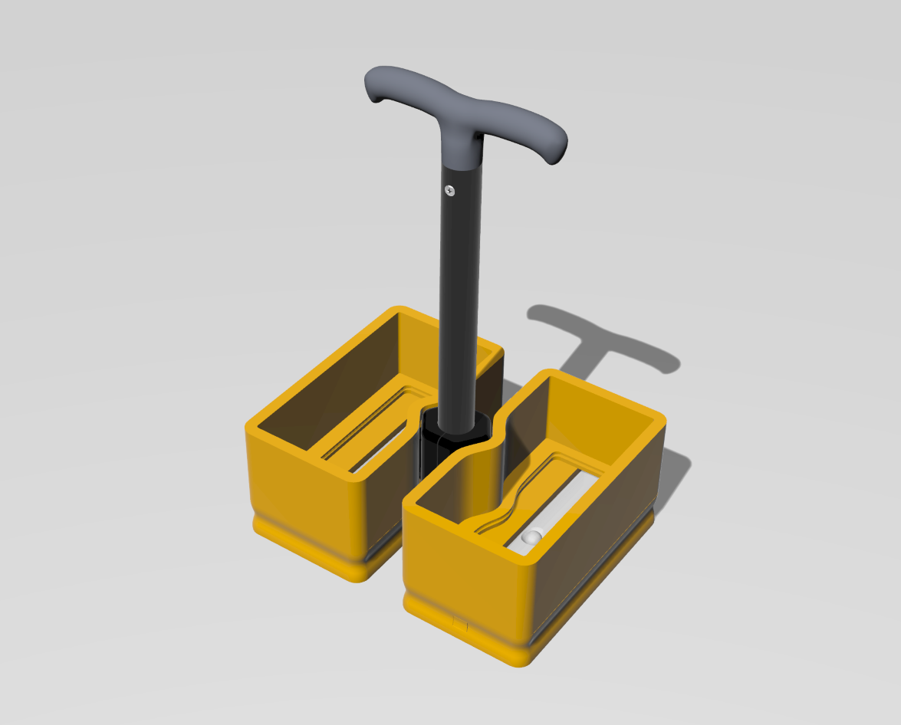

← Back to WORKS
かもめめ
Utility Design / 2024

概要
「お舟かもめ」で使用されているドリンクホルダーです。単純なホルダーとしての機能だけでなく、水中眼鏡として覗き込んだり、内部に光源を入れることでランタンのように使うこともできる多機能なプロダクトです。
船上という特殊な環境下で、乗船客に新しい驚きと体験を提供することを目的に開発されました。
Project Specs
- Client: Ofune Kamome
- Function: Drink Holder, Lantern
- Keywords: Experience Design